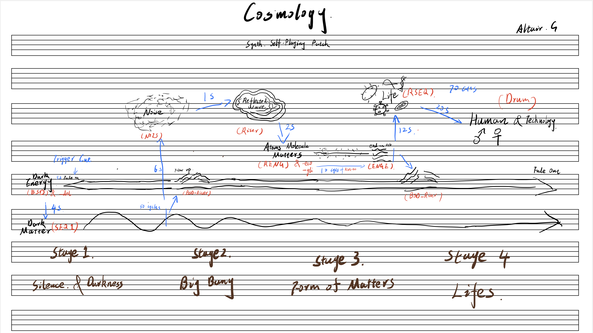

Cosmology
This is a piece of ambient music I created using the VCV Rack2 modular synthesizer. Compared to sheet music and recorded music, this type of creation stands out because it escapes the constraints of linear time. It can either play a complete musical structure within a set timeframe or, if desired, play indefinitely without repeating (the video shows one instance of its defined duration). Methodologically, this approach is about the creation and combination of sound elements. In creating this patch, I used seven different sound elements, each serving different functions in both the frequency and time domains. Several elements in their generation process include random mechanisms (similar to the Enigma machine, capable of producing nearly endless possibilities).


00:00 / 00:00
Cosmology

My Draft
In the process of creating with a modular synthesizer, as the patch becomes more complex, it not only consumes more computer memory, but the creative process can also become more confusing. Therefore, preparing a "score" at the beginning that represents the motifs and structure of the piece is very helpful. This pre-compositional planning aids in managing the complexity and maintaining clarity in the creative direction.